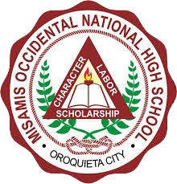
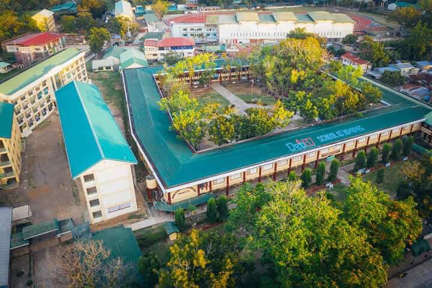

For Junior High Schooler's boys will wear a white pollo shirt with a little pocket on the left side of there chest with the School logo, and there bottom is
a Khaki. As for girls they wear a blouse with the School logo still on the left side of there chest but with out the little pocket, they also wear a long
maron skirt.

Misamis Occidental National High School (MONHS) is a prominent public secondary school located in
Oroquieta City, Misamis Occidental, Philippines. Established in 1938, it has a rich history spanning over
80 years, serving the educational needs of the local community and neighboring areas.